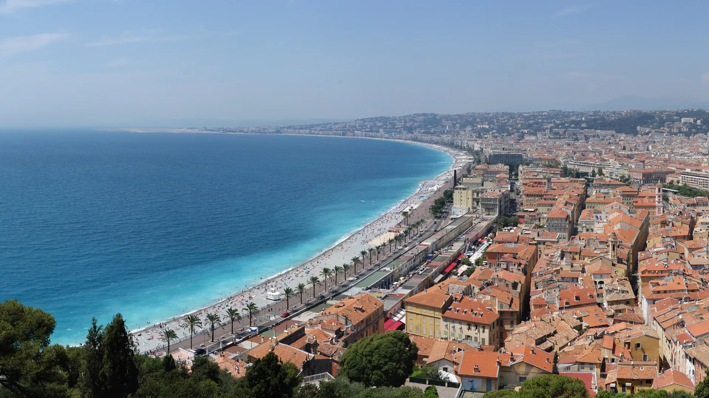
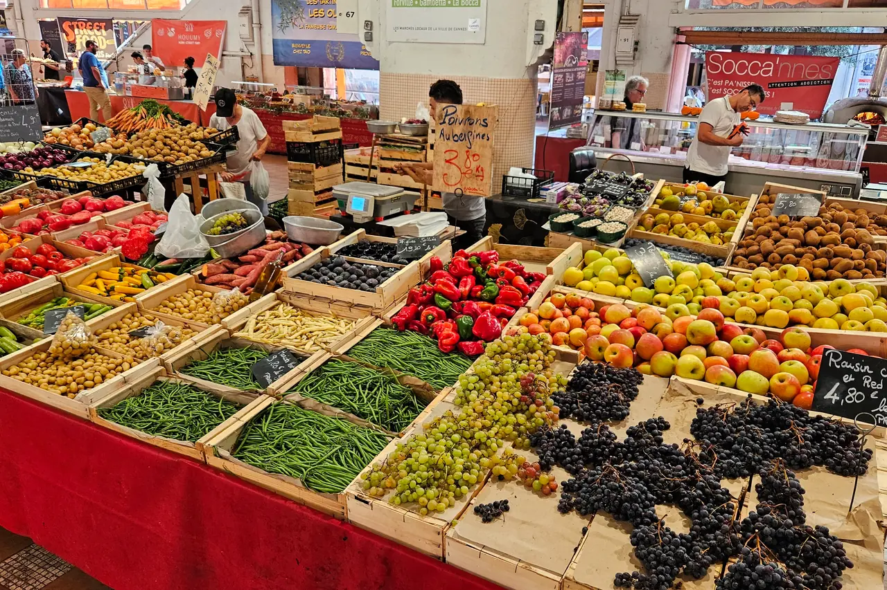
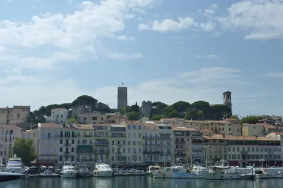
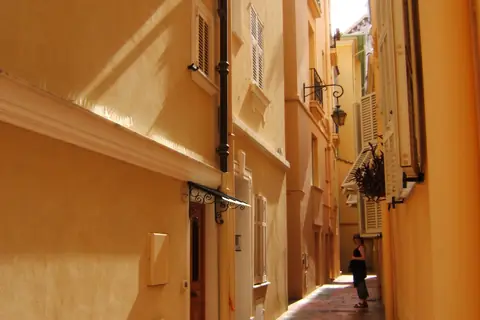
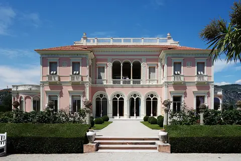

{kind=link}

Colline du Château (성채 언덕)
해발 92m 바위 절벽 위에서 천사의 만(Baie des Anges)과 구시가지, 림피아 항구를 360도 파노라마로 굽어보는 니스 최고의 천연 전망 공원.

| 항목 | 평가 |
|---|---|
| 여행 적합도 | ★★★★★ Jason·Julia의 생활형 여행에 최적화 |
| 예산 체감 | 중상 |
| 일정 강도 | 당일치기 2회 + 회복일 |
| 예약 핵심 | TER 기차 이동 유연 · NCE 렌터카 P0 |
| 우천 전환 | Nice 미술관 1곳 and 시장·카페 중심 |
니스는 화려함 뒤에 숨은 생생한 삶의 현장이 매력적인 지중해 생활도시이다. 이번 5박 일정은 명소 위주의 분주한 질주를 멈추고, 니스에 거점을 둔 채 칸(Cannes)과 모나코·망통(Monaco·Menton)을 기차로 다녀오는 최적의 방사형 여정을 제안한다. 특히 장기 여행 11일 차에 배치된 생활·회복일은 누적된 피로를 털어내고 프로방스 렌터카 이동을 준비하는 완벽한 완충 구간이다.
해발 92m 바위 절벽 위에서 천사의 만(Baie des Anges)과 구시가지, 림피아 항구를 360도 파노라마로 굽어보는 니스 최고의 천연 전망 공원.

지중해 꽃과 프로방스 제철 식재료, 그리고 갓 구워낸 니스 전통 소카(Socca)를 맛보는 유서 깊은 야외 시장 광장.

지중해로 60m 솟아오른 천연 바위 절벽 위에 조성된 모나코 대공국의 역사적 심장부이자 왕궁 마을.

크루아제트의 화려함 뒤에 숨겨진 11세기 옛 어촌의 가파른 돌계단 골목과 정상 성당에서 바라보는 칸 만의 파노라마.

칸 주민들의 부엌이자 지중해 해산물, 프로방스 과일, 꽃, 치즈가 가득한 1934년 유서 깊은 철골 재래시장.

프랑스·이탈리아 국경의 온난한 미기후 속에 지중해로 쏟아져 내리는 파스텔톤 구시가지와 17세기 바로크 생 미셸 대성당을 품은 '프랑스의 진주'.

쿠르 살레야 시장에서 출발해 비외 니스 미로 골목을 지나 성채 언덕의 지중해 낙조 파노라마로 이어지는 니스의 시그니처 도보 코스.

칸 기차역에서 출발해 포르빌 시장, 11세기 르 쉬케 어촌 언덕, 구항구를 지나 영화제의 상징 크루아제트 대로로 이어지는 칸 핵심 도보 코스.

절벽 위 왕궁 마을(Le Rocher)에서 11:55 위병 교대식을 보고 랑프 마요르 돌계단을 내려와 에르퀼 항구 F1 서킷을 지나 몬테카를로 카지노 광장으로 이어지는 모나코 핵심 도보 코스.

지중해 천사의 만(Baie des Anges)을 따라 7km로 이어지는 전 세계에서 가장 상징적인 해안 산책로이자 벨 에포크 건축의 전시장.

사보이 공국의 500년 통치 흔적이 남은 이탈리아 바로크풍 파스텔톤 건물과 미로 골목으로 이루어진 니스의 역사적 심장부.
앙티브 옛 성벽 골목에 위치한 미쉐린 1스타 레스토랑. 셰프 크리스티앙 모리세의 섬세한 남프랑스 지중해 미식.
에프뤼시 드 로스차일드 저택 내부의 우아한 살롱과 지중해 전망 테라스에서 즐기는 로맨틱 런치.

국제영화제의 상징 크루아제트 대로와 호화 요트 항구, 그리고 11세기 중세 어촌의 원형 르 쉬케 언덕이 공존하는 코트다쥐르의 영화 도시.

관광객 중심의 쿠르 살레야와 달리 니스 현지 주민들의 진짜 장바구니 물가와 일상을 만나는 대형 야외 농산물 시장.

해발 60m 절벽 위 왕궁 마을(Le Rocher), F1 그랑프리 서킷의 에르퀼 항구, 벨 에포크의 정점 몬테카를로 카지노가 수직으로 공존하는 세계 2위의 극소국.

지중해 절벽 위 분홍빛 벨 에포크 팔라초와 세계 9대 테마 정원, 분수 음악 쇼를 품은 리비에라의 보석.
살라드 니스와즈, 다우브(소고기 스튜), 팍시(Farcis)
시그니처 오징어 먹물 카넬로니, 런치 포뮬러(€55~€75), Menu du Figuier(€118)
바르바주앙(Barbajuan), 지중해 파스타, 에스프레소
구운 생선 요리, 해산물 리조또
Salade Béatrice(훈제연어·감귤), 제철 생선 요리(대구/도미 구이), 트로페시엔 타르트
프로방스 샐러드, 파니니
두 사람이 Day 7·10·11에 함께 쓰고 2회 여유를 두는 기본안
Multi voyages를 담는 공동 매체; 반납처에서 보증금 환급 가능
이번 일정은 공항에서 편도만 이동하므로 구매하지 않음
Nice 시내 tram·주요 bus와 공항·해안축 연결을 확인한다. 여행 월과 같은 2026년 9월판이며, 운행 장애와 정류장 변경은 당일 공식 앱에서 다시 확인한다.
니스 체류는 43일간의 장기 유럽 여정 중 가장 긴 무이동 구간(5박 6일)이다. 짐을 매일 싸고 푸는 피로에서 완전히 벗어나 회복을 도모하는 핵심적인 회복 구간이자, 기차로 칸과 모나코·망통을 탐방하며 '생활도시(Nice) - 영화제 리조트(Cannes) - 소국(Monaco) - 파스텔톤 해안(Menton)'이라는 지중해의 다채로운 매력을 횡단하여 비교하는 풍성한 인트로 역할을 한다.
5박의 여정은 다음과 같이 자연스러운 파동을 그린다: - 전반부 (도착~Day 2): 니스에 정착하며 꽃시장(Cours Saleya), Vieux Nice 골목과 성채 언덕(Castle Hill)을 걷는다. - 중반부 (Day 3~Day 4): 니스-빌 역을 통해 기차로 칸과 모나코·망통을 각각 하루씩 산뜻하게 다녀온다. - 후반부 (Day 5~이동일): 화요일 리베라시옹 생활시장에서 장을 보고 휴식 및 세탁을 마친 뒤, 다음 날 아침 공항 렌터카를 인수해 생폴드방스와 그라스를 경유하며 엑상프로방스(Aix)로 향한다.